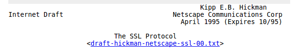
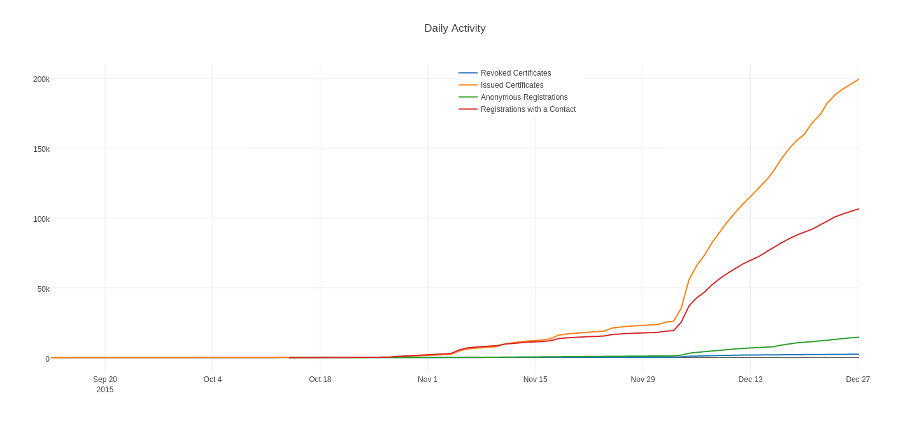
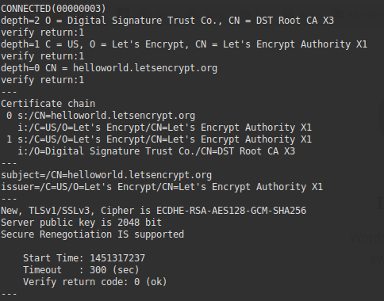
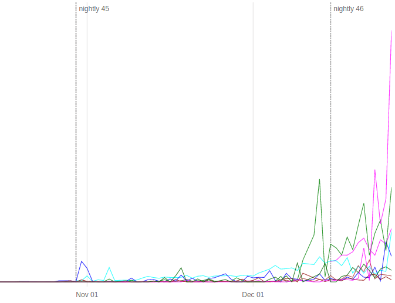
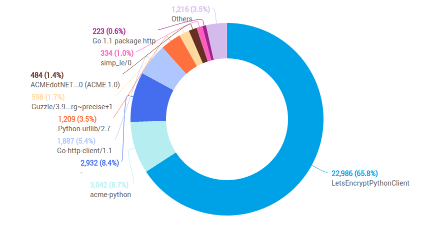

Launching a free CA
Roland Shoemaker / @rolandshoemaker
Technology Consultant, EFF

What is SSL/TLS?

- Standardized low-level cryptographic transport protocol
- Provides confidentiality + integrity + authenticity
- HTTPS is just HTTP wrapped with TLS
- Uses signed digital certificates to prove identity
- Certificate Authorities control issuance of trusted certificates
So what's the problem?
- The internet is untrustworthy
- Passive sniffing and active modification are all too real
- Only ~40% of initial requests are made over HTTPS
- Getting and installing a certificate is *confusing*
- Every CA has it's own validation/issuance practices
Our solution

- Free, open source, automated, and transparent CA
- Based on a standardized protocol for domain validation, certificate issuance, and management (ACME)
- Already public and widely trusted!
The CA/TLS ecosystem
What did we get ourselves into...
CA/B forum
The rule makers. Self governing body composed of trusted CAs and major browser vendors, 5 browsers + ~45 CAs
Audits
Ops team hard at work completing audits
- Required for root program inclusion + CA/B membership
Validation levels
- Domain
- Organization (more complicated)
- Extended (most complicated)
Where does Let's Encrypt fit in?
- Zero cost for issuance, renewal, and revocation (and everything else!)
- DV only, no plans for EV or OV
- Maximum 90 day validity periods
- Multiple domain certificates using SANs
- Issuing from intermediate cross-signed by IdenTrust
Opening the beta

- Moved from closed to public beta on Dec 3 2015
- ~1 issuance every two seconds for the first 12 hours
- To date we've issued ~207,000 certificates across ~440,000 DNS names (~67% of which are unique)
Top 10 issuers of currently unexpired certificates
# Unexpired Issuer distinguished name
----------- -------------------------
902398 (17.1560%) COMODO ECC Domain Validation Secure Server CA 2
660539 (12.5579%) COMODO RSA Domain Validation Secure Server CA
560662 (10.6591%) Go Daddy Secure Certificate Authority - G2
359243 (6.8298%) RapidSSL SHA256 CA - G3
207934 (3.9532%) Let's Encrypt Authority X1
148530 (2.8238%) AlphaSSL CA - SHA256 - G2
140973 (2.6801%) GlobalSign Domain Validation CA - SHA256 - G3
130358 (2.4783%) StartCom Class 1 Primary Intermediate Server CA
126857 (2.4118%) Go Daddy Secure Certification Authority
125405 (2.3842%) GlobalSign Organization Validation CA - G2
Already the largest free CA and 5th overall!
Measuring adoption is hard...
size != adoption
- Goal is to raise total % of HTTP connections going over HTTPS for everyone
- Extremely hard to directly measure
- Firefox telemetry for user usage rates
- CT analysis tools for certificate deployment rates/trends
How are people using LE?
- ~120,000 individual registrations
- ~2 certificates per registration
- ~2 DNS names per certificate
- ~33% of names have overlapping certificates
- ~20% of certificates have duplicate name sets
- ~80% of names had no previous certificates in CT logs
- ~2,500 revocations so far (~1% of total issuances)
Server side adoption

- ~75% of names we've issued for are using their certificate
- ~8% of names we've issued for use a broken TLS setup
- ~3% of names we've issued for don't serve HTTPS at all
- ~45% of certificates are used by all their DNS names
Client side adoption

~0.1% of successful TLS handshakes in Firefox nightlies
Clients

- A client for (nearly) every deployment scenario
- ~66% of users using official client
- Observed ~30 unique third-party clients
- Both traditional clients + more complex designs
Hosting providers + CDNs
- Akamai, KeyCDN, Dreamhost, Cyon, Pressjitsu, and more have/are developing integrations
- We expect these types of providers to make up the majority of usage in the long term
Future
- DNS based validation challenge
- Proof of possession challenge
- Multi-path validation